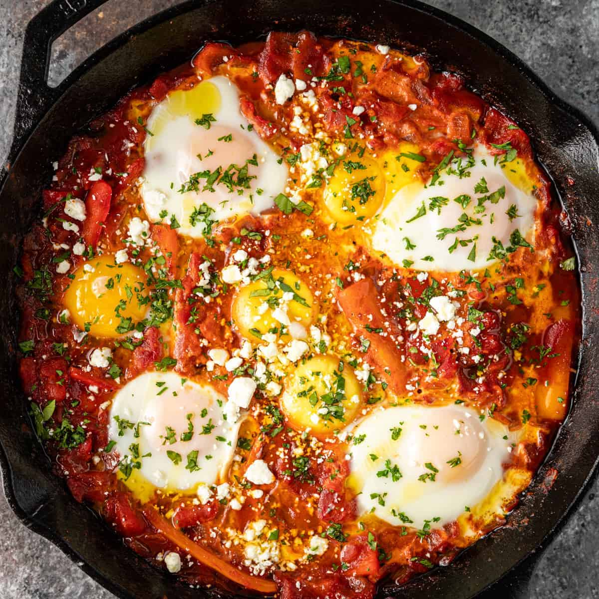

Moroccan Shakshuka

Description
This authentic Moroccan Shakshuka Recipe
features a diverse blend of North African spices,
year-round vegetables, and 8 eggs for an abundance of protein.
It’s filling and absolutely full of flavor for a robust,
spicy breakfast unlike any other.
Ingredients
- Saffron -
A very delicate spice. See the section below for more guidance.
- Eggs -
We’re using more yolks than whites. Save the extra whites for other recipes, like a light cheesecake.
- Harissa Paste -
This is a hot, bold, and tangy chili paste. Regular chili paste will do as a substitute,
or you could use your preferred hot sauce — though it will be thinner.
How to make this Shakshuka Recipe
- Bloom the Saffron
- Sweat the Seasonings and Vegetables
- Add the Tomatoes & Saffron
- Add the Eggs
- Portion & Serve